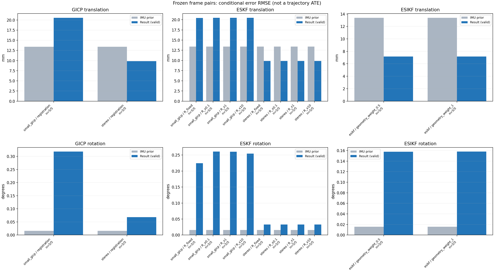

20261015_112757_right · depth=disparity_cache · cache=88990c54f9f0bcfdf807
模型视差：/home/ubuntu22/slam/SIO_SLAM/models/tensorrt/disp_896x448_fp16.plan；engine SHA256=604cf6ac1f705c877260711730dd5d2d58c2a21f3020c03c668401ef7fb1e768。输入为生产裁剪与光照处理后的 RGB 0..255；此实验使用原始浮点像素视差，不应用完整前端的邻域视差后处理。
原始 ONNX SHA256：e9f49736a65d68d06681add463866b6defdf78fdd7f4f50f6cc941b682fdc0bc。
代价体图改写验证：ONNX Runtime 固定随机特征输入，最大绝对误差 0；该项检查图改写，完整模型精度仍需由录制数据评估。
配准代码版本：744ac2d993ae629b0cc44a3b1d995e04ab4fad48；观测生成版本：744ac2d993ae629b0cc44a3b1d995e04ab4fad48。
固定图像对与纯 IMU 先验；ESKF 回放固定 GICP 观测，ESIKF 直接读取点云。真值只用于此报告。
同时查看 converged 与 solver_status：上游默认 Stereo 在 max_iter / stopped_at_minimum 时也可能置 converged=true。valid 表示输入检查通过，不表示精度提升。欧氏 GICP 未提供独立的点距 RMSE，该列显示 NaN。
误差按每对图像的锚点计算，单位 m / degrees。此处 RMSE 不是全序列 ATE；末帧受同一锚点条件约束。NIS 与条件马氏距离是诊断量，少量相关图像对不能用于宣称协方差已校准。
全部指标 CSV · R / P / K 矩阵 CSV · Stereo 求解逐轮 CSV · ESIKF 逐轮 CSV · 配置快照 · 矢量图
| stage | method | variant | valid | total | translation RMSE (m) | rotation RMSE (deg) |
|---|---|---|---|---|---|---|
| esikf | esikf | geometry_weight_0.5 | 5 | 5 | 0.0071665 | 0.15785 |
| esikf | esikf | geometry_weight_1 | 5 | 5 | 0.0071791 | 0.15797 |
| eskf | small_gicp | R_fixed | 5 | 5 | 0.020435 | 0.22457 |
| eskf | small_gicp | R_x0.1 | 5 | 5 | 0.020476 | 0.26068 |
| eskf | small_gicp | R_x1 | 5 | 5 | 0.020476 | 0.26009 |
| eskf | small_gicp | R_x10 | 5 | 5 | 0.020483 | 0.25461 |
| eskf | stereo | R_fixed | 5 | 5 | 0.0098588 | 0.032903 |
| eskf | stereo | R_x0.1 | 5 | 5 | 0.0098597 | 0.033041 |
| eskf | stereo | R_x1 | 5 | 5 | 0.0098597 | 0.033041 |
| eskf | stereo | R_x10 | 5 | 5 | 0.0098597 | 0.033041 |
| gicp | small_gicp | registration | 5 | 5 | 0.020551 | 0.31825 |
| gicp | stereo | registration | 5 | 5 | 0.0098679 | 0.068054 |

| stage | case | method | variant | status | solver_status | inliers | converged | covariance_convention | covariance_from_hessian | fitness | registration_rmse_m | prior_trans_error_m | result_trans_error_m | prior_rot_error_deg | result_rot_error_deg | R_rot_trace_rad2 | R_pos_trace_m2 | nis_regularized |
|---|---|---|---|---|---|---|---|---|---|---|---|---|---|---|---|---|---|---|
| gicp | static_start | small_gicp | registration | eligible | 17102 | 1 | right_source_body | 1 | 0.949 | nan | 8.5313e-05 | 0.013028 | 0.00090396 | 0.38151 | 1.5183e-06 | 2.0154e-05 | nan | |
| gicp | static_start | stereo | registration | eligible | max_iter | 15435 | 1 | left_target_body | 1 | 0.85579 | 0.084219 | 8.5313e-05 | 0.0011455 | 0.00090396 | 0.0047596 | 5.6222e-09 | 8.443e-08 | nan |
| gicp | sync_motion | small_gicp | registration | eligible | 17049 | 1 | right_source_body | 1 | 0.91874 | nan | 0.00089766 | 0.025451 | 0.0098191 | 0.45419 | 1.6123e-06 | 2.2564e-05 | nan | |
| gicp | sync_motion | stereo | registration | eligible | max_iter | 15794 | 1 | left_target_body | 1 | 0.85898 | 0.11925 | 0.00089766 | 0.0028855 | 0.0098191 | 0.038474 | 5.5359e-09 | 8.3981e-08 | nan |
| gicp | main_motion | small_gicp | registration | eligible | 20071 | 1 | right_source_body | 1 | 0.87277 | nan | 0.0040306 | 0.013892 | 0.019163 | 0.31329 | 1.1365e-06 | 2.1206e-05 | nan | |
| gicp | main_motion | stereo | registration | eligible | max_iter | 18902 | 1 | left_target_body | 1 | 0.8238 | 0.20503 | 0.0040306 | 0.0042657 | 0.019163 | 0.017814 | 2.9005e-09 | 6.2381e-08 | nan |
| gicp | main_motion_long | small_gicp | registration | eligible | 17502 | 1 | right_source_body | 1 | 0.79281 | nan | 0.02491 | 0.026213 | 0.02698 | 0.1026 | 1.3806e-06 | 2.4392e-05 | nan | |
| gicp | main_motion_long | stereo | registration | eligible | max_iter | 15347 | 1 | left_target_body | 1 | 0.6955 | 0.099197 | 0.02491 | 0.019937 | 0.02698 | 0.083864 | 6.0592e-09 | 9.8807e-08 | nan |
| gicp | static_end | small_gicp | registration | eligible | 21818 | 1 | right_source_body | 1 | 0.98359 | nan | 0.0161 | 0.020349 | 0.0045092 | 0.21426 | 6.9113e-07 | 1.3139e-05 | nan | |
| gicp | static_end | stereo | registration | eligible | max_iter | 19865 | 1 | left_target_body | 1 | 0.89037 | 0.059223 | 0.0161 | 0.0078451 | 0.0045092 | 0.1196 | 4.4031e-09 | 7.2769e-08 | nan |
| eskf | static_start | small_gicp | R_x0.1 | updated | 17102 | 1 | right_source_body | 1 | 0.949 | nan | 8.5313e-05 | 0.013025 | 0.00090396 | 0.38125 | 1.5183e-07 | 2.0154e-06 | 0.044071 | |
| eskf | static_start | small_gicp | R_x1 | updated | 17102 | 1 | right_source_body | 1 | 0.949 | nan | 8.5313e-05 | 0.013012 | 0.00090396 | 0.38103 | 1.5183e-06 | 2.0154e-05 | 0.044033 | |
| eskf | static_start | small_gicp | R_x10 | updated | 17102 | 1 | right_source_body | 1 | 0.949 | nan | 8.5313e-05 | 0.012885 | 0.00090396 | 0.37895 | 1.5183e-05 | 0.00020154 | 0.043657 | |
| eskf | static_start | small_gicp | R_fixed | updated | 17102 | 1 | right_source_body | 1 | 0.949 | nan | 8.5313e-05 | 0.012545 | 0.00090396 | 0.36449 | 0.00022846 | 0.0012 | 0.04164 | |
| eskf | static_start | stereo | R_x0.1 | updated | max_iter | 15435 | 1 | left_target_body | 1 | 0.85579 | 0.084219 | 8.5313e-05 | 0.0011454 | 0.00090396 | 0.0047574 | 5.6222e-10 | 8.443e-09 | 0.00010371 |
| eskf | static_start | stereo | R_x1 | updated | max_iter | 15435 | 1 | left_target_body | 1 | 0.85579 | 0.084219 | 8.5313e-05 | 0.0011454 | 0.00090396 | 0.0047574 | 5.6222e-09 | 8.443e-08 | 0.00010371 |
| eskf | static_start | stereo | R_x10 | updated | max_iter | 15435 | 1 | left_target_body | 1 | 0.85579 | 0.084219 | 8.5313e-05 | 0.0011454 | 0.00090396 | 0.0047572 | 5.6222e-08 | 8.443e-07 | 0.0001037 |
| eskf | static_start | stereo | R_fixed | updated | max_iter | 15435 | 1 | left_target_body | 1 | 0.85579 | 0.084219 | 8.5313e-05 | 0.0011109 | 0.00090396 | 0.0046803 | 0.00022846 | 0.0012 | 9.7131e-05 |
| eskf | sync_motion | small_gicp | R_x0.1 | updated | 17049 | 1 | right_source_body | 1 | 0.91874 | nan | 0.00089766 | 0.025458 | 0.0098191 | 0.39022 | 1.6123e-07 | 2.2564e-06 | 0.71189 | |
| eskf | sync_motion | small_gicp | R_x1 | updated | 17049 | 1 | right_source_body | 1 | 0.91874 | nan | 0.00089766 | 0.025467 | 0.0098191 | 0.38846 | 1.6123e-06 | 2.2564e-05 | 0.70851 | |
| eskf | sync_motion | small_gicp | R_x10 | updated | 17049 | 1 | right_source_body | 1 | 0.91874 | nan | 0.00089766 | 0.025559 | 0.0098191 | 0.37212 | 1.6123e-05 | 0.00022564 | 0.67634 | |
| eskf | sync_motion | small_gicp | R_fixed | updated | 17049 | 1 | right_source_body | 1 | 0.91874 | nan | 0.00089766 | 0.02554 | 0.0098191 | 0.27827 | 0.00022846 | 0.0012 | 0.31935 | |
| eskf | sync_motion | stereo | R_x0.1 | updated | max_iter | 15794 | 1 | left_target_body | 1 | 0.85898 | 0.11925 | 0.00089766 | 0.0028855 | 0.0098191 | 0.038261 | 5.5359e-10 | 8.3981e-09 | 0.00027927 |
| eskf | sync_motion | stereo | R_x1 | updated | max_iter | 15794 | 1 | left_target_body | 1 | 0.85898 | 0.11925 | 0.00089766 | 0.0028855 | 0.0098191 | 0.038261 | 5.5359e-09 | 8.3981e-08 | 0.00027926 |
| eskf | sync_motion | stereo | R_x10 | updated | max_iter | 15794 | 1 | left_target_body | 1 | 0.85898 | 0.11925 | 0.00089766 | 0.0028855 | 0.0098191 | 0.03826 | 5.5359e-08 | 8.3981e-07 | 0.0002792 |
| eskf | sync_motion | stereo | R_fixed | updated | max_iter | 15794 | 1 | left_target_body | 1 | 0.85898 | 0.11925 | 0.00089766 | 0.0028839 | 0.0098191 | 0.0379 | 0.00022846 | 0.0012 | 0.00014863 |
| eskf | main_motion | small_gicp | R_x0.1 | updated | 20071 | 1 | right_source_body | 1 | 0.87277 | nan | 0.0040306 | 0.013894 | 0.019163 | 0.20154 | 1.1365e-07 | 2.1206e-06 | 0.0084108 | |
| eskf | main_motion | small_gicp | R_x1 | updated | 20071 | 1 | right_source_body | 1 | 0.87277 | nan | 0.0040306 | 0.013894 | 0.019163 | 0.20151 | 1.1365e-06 | 2.1206e-05 | 0.00841 | |
| eskf | main_motion | small_gicp | R_x10 | updated | 20071 | 1 | right_source_body | 1 | 0.87277 | nan | 0.0040306 | 0.013893 | 0.019163 | 0.20129 | 1.1365e-05 | 0.00021206 | 0.0084013 | |
| eskf | main_motion | small_gicp | R_fixed | updated | 20071 | 1 | right_source_body | 1 | 0.87277 | nan | 0.0040306 | 0.013894 | 0.019163 | 0.20084 | 0.00022846 | 0.0012 | 0.0081448 | |
| eskf | main_motion | stereo | R_x0.1 | updated | max_iter | 18902 | 1 | left_target_body | 1 | 0.8238 | 0.20503 | 0.0040306 | 0.0042659 | 0.019163 | 0.016069 | 2.9005e-10 | 6.2381e-09 | 6.454e-06 |
| eskf | main_motion | stereo | R_x1 | updated | max_iter | 18902 | 1 | left_target_body | 1 | 0.8238 | 0.20503 | 0.0040306 | 0.0042659 | 0.019163 | 0.016069 | 2.9005e-09 | 6.2381e-08 | 6.454e-06 |
| eskf | main_motion | stereo | R_x10 | updated | max_iter | 18902 | 1 | left_target_body | 1 | 0.8238 | 0.20503 | 0.0040306 | 0.0042659 | 0.019163 | 0.016069 | 2.9005e-08 | 6.2381e-07 | 6.454e-06 |
| eskf | main_motion | stereo | R_fixed | updated | max_iter | 18902 | 1 | left_target_body | 1 | 0.8238 | 0.20503 | 0.0040306 | 0.0042659 | 0.019163 | 0.016043 | 0.00022846 | 0.0012 | 6.4312e-06 |
| eskf | main_motion_long | small_gicp | R_x0.1 | updated | 17502 | 1 | right_source_body | 1 | 0.79281 | nan | 0.02491 | 0.026198 | 0.02698 | 0.024628 | 1.3806e-07 | 2.4392e-06 | 0.0023326 | |
| eskf | main_motion_long | small_gicp | R_x1 | updated | 17502 | 1 | right_source_body | 1 | 0.79281 | nan | 0.02491 | 0.026198 | 0.02698 | 0.024636 | 1.3806e-06 | 2.4392e-05 | 0.0023324 | |
| eskf | main_motion_long | small_gicp | R_x10 | updated | 17502 | 1 | right_source_body | 1 | 0.79281 | nan | 0.02491 | 0.026198 | 0.02698 | 0.024721 | 1.3806e-05 | 0.00024392 | 0.0023305 | |
| eskf | main_motion_long | small_gicp | R_fixed | updated | 17502 | 1 | right_source_body | 1 | 0.79281 | nan | 0.02491 | 0.026196 | 0.02698 | 0.024739 | 0.00022846 | 0.0012 | 0.0022733 | |
| eskf | main_motion_long | stereo | R_x0.1 | updated | max_iter | 15347 | 1 | left_target_body | 1 | 0.6955 | 0.099197 | 0.02491 | 0.019937 | 0.02698 | 0.059685 | 6.0592e-10 | 9.8807e-09 | 0.00083992 |
| eskf | main_motion_long | stereo | R_x1 | updated | max_iter | 15347 | 1 | left_target_body | 1 | 0.6955 | 0.099197 | 0.02491 | 0.019937 | 0.02698 | 0.059685 | 6.0592e-09 | 9.8807e-08 | 0.00083992 |
| eskf | main_motion_long | stereo | R_x10 | updated | max_iter | 15347 | 1 | left_target_body | 1 | 0.6955 | 0.099197 | 0.02491 | 0.019937 | 0.02698 | 0.059685 | 6.0592e-08 | 9.8807e-07 | 0.00083992 |
| eskf | main_motion_long | stereo | R_fixed | updated | max_iter | 15347 | 1 | left_target_body | 1 | 0.6955 | 0.099197 | 0.02491 | 0.019937 | 0.02698 | 0.059548 | 0.00022846 | 0.0012 | 0.00081613 |
| eskf | static_end | small_gicp | R_x0.1 | updated | 21818 | 1 | right_source_body | 1 | 0.98359 | nan | 0.0161 | 0.019977 | 0.0045092 | 0.030422 | 6.9113e-08 | 1.3139e-06 | 0.00012333 | |
| eskf | static_end | small_gicp | R_x1 | updated | 21818 | 1 | right_source_body | 1 | 0.98359 | nan | 0.0161 | 0.019977 | 0.0045092 | 0.030422 | 6.9113e-07 | 1.3139e-05 | 0.00012333 | |
| eskf | static_end | small_gicp | R_x10 | updated | 21818 | 1 | right_source_body | 1 | 0.98359 | nan | 0.0161 | 0.019977 | 0.0045092 | 0.030421 | 6.9113e-06 | 0.00013139 | 0.00012333 | |
| eskf | static_end | small_gicp | R_fixed | updated | 21818 | 1 | right_source_body | 1 | 0.98359 | nan | 0.0161 | 0.019977 | 0.0045092 | 0.030408 | 0.00022846 | 0.0012 | 0.0001233 | |
| eskf | static_end | stereo | R_x0.1 | updated | max_iter | 19865 | 1 | left_target_body | 1 | 0.89037 | 0.059223 | 0.0161 | 0.0077943 | 0.0045092 | 0.012308 | 4.4031e-10 | 7.2769e-09 | 2.8659e-05 |
| eskf | static_end | stereo | R_x1 | updated | max_iter | 19865 | 1 | left_target_body | 1 | 0.89037 | 0.059223 | 0.0161 | 0.0077943 | 0.0045092 | 0.012308 | 4.4031e-09 | 7.2769e-08 | 2.8659e-05 |
| eskf | static_end | stereo | R_x10 | updated | max_iter | 19865 | 1 | left_target_body | 1 | 0.89037 | 0.059223 | 0.0161 | 0.0077943 | 0.0045092 | 0.012308 | 4.4031e-08 | 7.2769e-07 | 2.8659e-05 |
| eskf | static_end | stereo | R_fixed | updated | max_iter | 19865 | 1 | left_target_body | 1 | 0.89037 | 0.059223 | 0.0161 | 0.0077942 | 0.0045092 | 0.012302 | 0.00022846 | 0.0012 | 2.865e-05 |
| esikf | static_start | esikf | geometry_weight_1 | updated | 15559 | 1 | 1 | 0 | 0 | 8.5313e-05 | 0.0013023 | 0.00090396 | 0.044194 | 1.3653e-07 | 9.4628e-07 | nan | ||
| esikf | static_start | esikf | geometry_weight_0.5 | updated | 15559 | 1 | 1 | 0 | 0 | 8.5313e-05 | 0.0013013 | 0.00090396 | 0.0442 | 2.7294e-07 | 1.8917e-06 | nan | ||
| esikf | sync_motion | esikf | geometry_weight_1 | updated | 16463 | 1 | 1 | 0 | 0 | 0.00089766 | 0.0062278 | 0.0098191 | 0.12103 | 1.2904e-07 | 9.0157e-07 | nan | ||
| esikf | sync_motion | esikf | geometry_weight_0.5 | updated | 16462 | 1 | 1 | 0 | 0 | 0.00089766 | 0.00622 | 0.0098191 | 0.12078 | 2.5791e-07 | 1.8017e-06 | nan | ||
| esikf | main_motion | esikf | geometry_weight_1 | updated | 20184 | 1 | 1 | 0 | 0 | 0.0040306 | 0.0046112 | 0.019163 | 0.06159 | 9.3172e-08 | 9.5879e-07 | nan | ||
| esikf | main_motion | esikf | geometry_weight_0.5 | updated | 20184 | 1 | 1 | 0 | 0 | 0.0040306 | 0.0046196 | 0.019163 | 0.061968 | 1.8624e-07 | 1.9166e-06 | nan | ||
| esikf | main_motion_long | esikf | geometry_weight_1 | updated_not_converged | 17028 | 0 | 1 | 0 | 0 | 0.02491 | 0.012732 | 0.02698 | 0.26459 | 1.2528e-07 | 1.0336e-06 | nan | ||
| esikf | main_motion_long | esikf | geometry_weight_0.5 | updated_not_converged | 17030 | 0 | 1 | 0 | 0 | 0.02491 | 0.012697 | 0.02698 | 0.2644 | 2.5044e-07 | 2.067e-06 | nan | ||
| esikf | static_end | esikf | geometry_weight_1 | updated | 19802 | 1 | 1 | 0 | 0 | 0.0161 | 0.0058174 | 0.0045092 | 0.18541 | 7.1464e-08 | 9.4257e-07 | nan | ||
| esikf | static_end | esikf | geometry_weight_0.5 | updated | 19803 | 1 | 1 | 0 | 0 | 0.0161 | 0.0058183 | 0.0045092 | 0.18519 | 1.4286e-07 | 1.8841e-06 | nan |